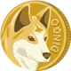
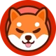
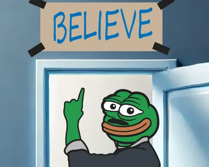

Scrypt merged mining
The Scrypt family: one miner, three coins.
A Scrypt mining machine does its work once and gets paid by several blockchains at the same time. Litecoin started the family in 2011, Dogecoin joined in 2014, and Pepecoin joined in 2024. This is how it happened and what it gives miners and holders.

Work once, get paid three times
One hash, three blockchains
A Scrypt machine does one thing: it computes hashes. With merged mining, every hash is checked against each chain's target at once. When it is good enough for a chain, that chain gets a new block and pays its own reward.
-

Litecoin
2 blocks in 5 minutesa block every 2.5 min
05 min Pays LTC -

Dogecoin
5 blocks in 5 minutesa block every minute
05 min Pays DOGE -

Pepecoin
5 blocks in 5 minutesa block every minute
05 min Pays PEP
“Merging mining with dogecoin would make both litecoin/dogecoin almost impossible to 51%.”
Family photo
The whole family
The Scrypt chains that mining pools pay out most often. Bellscoin, Luckycoin and Junkcoin date from 2013 and came back to life in 2023 and 2024.
- since Oct 2011
LitecoinLTC
The parent chain. Charlie Lee's Scrypt version of Bitcoin, with 2.5-minute blocks and an 84 million cap.
- since Dec 2013
DogecoinDOGE
Built on Luckycoin and Litecoin code. Merge-mined with Litecoin since September 2014.
- since Jan 2024
PepecoinPEP
A fork of Dogecoin Core with no premine. Merged mining from block 42,000.
- since Nov 2013
BellscoinBELLS
Billy Markus's Animal Crossing coin, launched days before Dogecoin. Revived in December 2023, merge-mined from block 144,000.
- since May 2013
LuckycoinLKY
The Litecoin fork whose code Dogecoin was built on. Revived in 2024 on its original 2013 chain.
- since May 2013
JunkcoinJKC
One of the first meme coins, capped at 54 million. Its community restarted it in November 2024.
- since Apr 2021

DingocoinDINGO
A fair-launch Dogecoin fork: one-minute blocks, a fixed 10,000-coin reward and no cap.
- since Dec 2024

ShibacoinSHIC
A newer Dogecoin fork, merge-mined with Litecoin from block 24,000.
Which of these a miner is paid depends on the pool. ViaBTC's Litecoin pool lists all seven on top of LTC: DOGE, BELLS, LKY, PEP, JKC, DINGO and SHIC. Other pools carry a different mix.
AuxPoW, explained like you're a frog
How merged mining works
The technical name is Auxiliary Proof of Work, or AuxPoW. Every chain keeps its own ledger, its own rules and its own reward. Only the work is shared.
- Build one blockThe miner builds a Litecoin block and tucks a reference to a Dogecoin block and a Pepecoin block inside it.
- Hash it onceThe machine does the Scrypt work a single time, on the same hardware and the same electricity.
- Each chain checksIf the result is good enough for a chain, that chain accepts its block and pays its own reward. Each can verify that real Scrypt work was done.
Nothing is split
Miners earn the same LTC and DOGE as before. In the words of the pool ViaBTC, PEP is an additional reward from merged mining, requiring no extra hashrate.
How to mine PEP →
Why Scrypt and not Bitcoin
Scrypt needs more memory than Bitcoin's SHA-256. A Bitcoin miner cannot mine Scrypt coins, and a Scrypt miner cannot mine Bitcoin.
Lore
How it happened
From a backup tool in 2009 to a frog on Kraken. The green ones are Pepecoin’s.
- 2009
Scrypt is published
Colin Percival designs the hashing function for the Tarsnap backup service.
- Oct 2011
Litecoin
Charlie Lee, a former Google engineer, releases Litecoin with Scrypt, 2.5-minute blocks and a cap of 84 million coins.
- Dec 2013
Dogecoin
Billy Markus and Jackson Palmer build it on Luckycoin and Litecoin code: Scrypt again, with one-minute blocks.
- Apr 2014
Charlie Lee's proposal
Dogecoin's rewards halved quickly, miners left and a 51% attack got cheaper. On the Dogecoin subreddit Lee suggests letting Litecoin miners secure it too.
Merge mining only affects mining and nothing else,
he writes. Co-founder Jackson Palmer is not convinced at first. - Sep 2014
Dogecoin says yes
Our hashrate has been on a decline,
the developers write in August. Merged mining goes live at block 371,337. Lee says the community can nowfocus on what dogecoin does best
. Billy Markus later said the decision saved Dogecoin, according to the Litecoin Foundation. - 2015
10,000 DOGE a block
Dogecoin's reward settles at a fixed 10,000 coins per block, and the arrangement with Litecoin holds from then on.
- Jan 2024
Pepecoin launches
A fork of Dogecoin Core with the same rules, and no premine, no ICO and no team allocation. Every PEP in existence was mined. Merged mining is built in from block 42,000.
- 2024–25
The family grows
Old and new Scrypt chains join Litecoin merged mining at the big pools: Bellscoin, Luckycoin, Junkcoin, Dingocoin and Shibacoin.
- Oct 2025
Litecoin and Dogecoin funds
Canary's LTCC, the first U.S. spot Litecoin ETF, lists on Nasdaq. Grayscale's spot Dogecoin fund GDOG follows on NYSE Arca a month later.
- Feb 2026
Kraken lists Pepecoin
PEP starts trading on Kraken.
- Jul 2026
Developers on merged mining
Dogecoin developer chromatic points out that Dogecoin's security rests on every merge-mined Scrypt chain, not on Litecoin alone. Billy Markus adds:
Doge is the most profitable scrypt coin to mine.
- Oct 2026
Pepecoin today
Mining difficulty of 40.6 million on October 5, inside the 28.8 to 47.5 million range Dogecoin moved through that week. Both aim for a block a minute, so that means a similar amount of hashrate. A Pepecoin co-founder was on the merged-mining panel at Litecoin Summit 2026 in Amsterdam.
So what?
What it gives miners and holders
For miners
More coins from the same machine and the same electricity. PEP arrives on top of LTC and DOGE with no extra setup beyond a payout address.
For the network
A young chain is secured by the hashrate of established ones from early on, instead of having to attract its own miners from zero.
For holders
Every block, reward and balance is on a public blockchain. Anyone can check the supply, the rich list and the mining pools in an explorer.

Opinion · a personal note
Why I'm here
Everything above this box can be checked against a block explorer or a source link. This part can't. It's just what I believe.
I think the proof-of-work story comes back. Crypto is drowning in tokens that take an afternoon to print. Fast money, and no community left once the money moves on. With Pepecoin it's the other way round: nobody was handed a single coin, people stick around, and I'm having a great time.
If stock exchanges and crypto are only starting to grow together, my bet is that big finance goes looking for coins as solid as Bitcoin, and Litecoin is first in line. Its miners have kept the chain going, block after block, for fifteen years, and Litecoin and Dogecoin funds already trade on US exchanges.
And here's the part I like most. When Litecoin does well, Scrypt mining pays better. Better pay brings more miners, and every one of those machines can mine Dogecoin and Pepecoin at the same time. More miners, more eyes on us.
So back the honest ones: fair launch, proof of work, Scrypt fam. In a market flooded with pump.fun launches and outright scams, that's fresh air. Crypto the way it was meant to be. Honest.
Written by the regular guy who makes these pages. An opinion, not a forecast and not investment advice. The author holds PEP.
Frens keep asking
Common questions
What is merged mining?
Merged mining, or Auxiliary Proof of Work (AuxPoW), lets a miner use one piece of proof-of-work to produce blocks on several blockchains that share a hashing algorithm. Each chain checks the work against its own rules and pays its own reward.
Does merged mining reduce Litecoin or Dogecoin rewards?
No. The hashrate is not split between chains. A miner earns the same Litecoin and Dogecoin as before, and the merge-mined coins come on top.
Which coins can be merge-mined with Litecoin?
Dogecoin and Pepecoin, plus smaller Scrypt chains: Bellscoin, Luckycoin, Junkcoin, Dingocoin and Shibacoin. The exact list depends on the mining pool.
What hardware mines Pepecoin?
A Scrypt ASIC miner, the same machine used for Litecoin and Dogecoin, pointed at a pool that supports merged mining. ViaBTC names the Antminer L9 and the ElphaPex DG1 as examples.
Is Pepecoin the same as PEPE?
No. PEPE is a token on Ethereum. Pepecoin (PEP) is a coin on its own proof-of-work blockchain. See Which Pepecoin is which?
Does Pepecoin have a supply cap?
No. Like Dogecoin, it adds a fixed 10,000 coins per block, so the inflation rate falls every year. See Supply and inflation.
Receipts
Sources
History
Code and rules
Mining today
The rest of the family
- ViaBTC: Bellscoin
- Luckycoin Foundation
- ViaBTC: Junkcoin
- ViaBTC: Dingocoin
- ViaBTC: Shibacoin
- Coin logos: each project's own wallet repository (Bellscoin, Luckycoin, Junkcoin, Dingocoin, Shibacoin); LTC from web3icons, DOGE from Trust Wallet assets